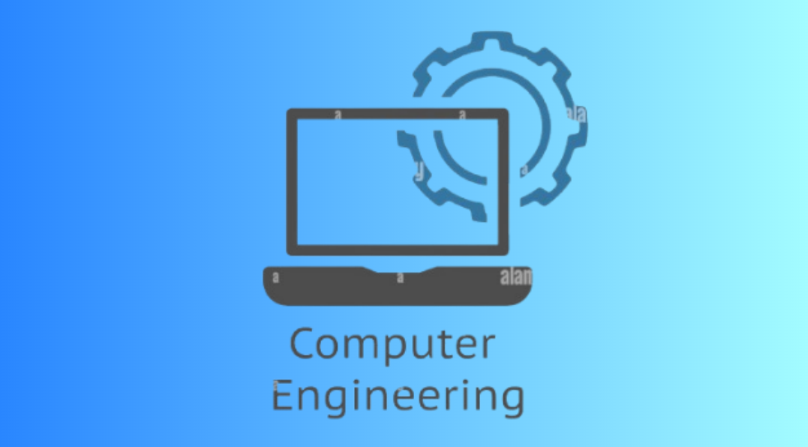
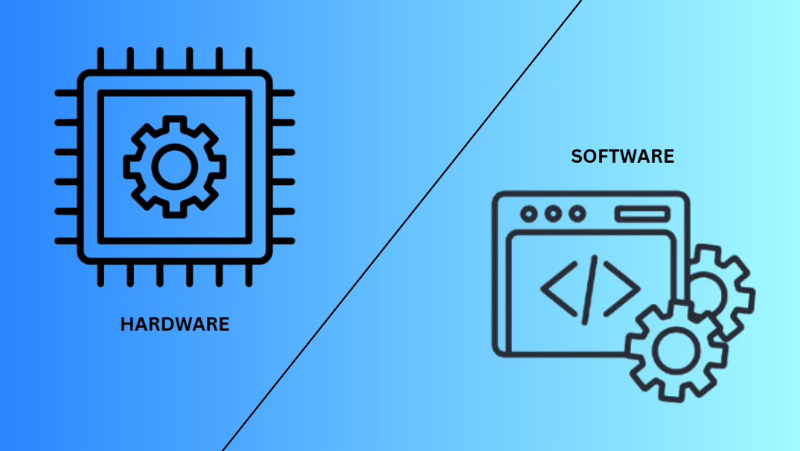
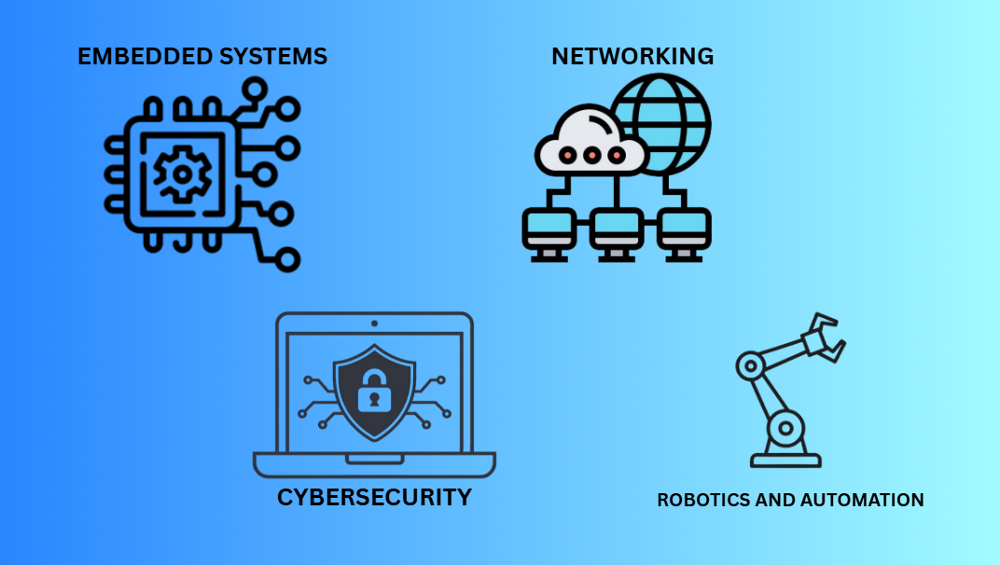
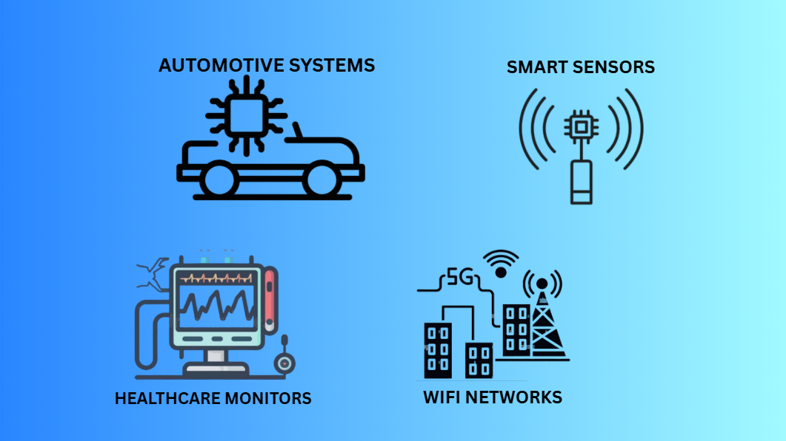

Computer engineering combines electrical engineering and computer science to design, build, and optimize hardware-software systems. Computer engineers develop microprocessors, circuit boards, and low-level firmware to power embedded devices, consumer electronics, microcontrollers, and network infrastructure.

Computer engineering is the field that combines electrical engineering and computer science to build the hardware and low-level software that make electronic devices work. Simply put, computer engineers design both the physical parts of a computer–like microchips, circuit boards, and sensors–and the internal software that allows those parts to communicate and run applications.

Computer engineering bridges physical hardware and software execution by translating electronic circuitry into functional code. While hardware design provides the physical medium–such as microprocessors, logic gates, and memory–software supplies the instructions that dictate how those components behave. Computer engineering sits at this intersection by developing the critical low-level layer, including firmware, drivers, and embedded systems, that enables software applications to directly control and interact with physical electronic hardware.

Computer engineering spans key sub-fields including embedded systems, computer architecture and VLSI design, networking and cybersecurity, robotics and automation, and digital signal processing.
Computer engineering powers everyday life through embedded electronics and communication systems found in smartphones, smart home appliances, wearable fitness trackers, and modern automobiles. It also drives essential infrastructure like imaging devices, automated robotics, and networking.

Computer engineering work powers practical technology across multiple industries, including embedded controls in automotive systems, medical imaging and patient monitors in healthcare, smart sensors in IoT and industrial robotics, and communication infrastructure like Wi-Fi routers and 5G networks.
Computer engineering underpins modern society by driving critical infrastructure, healthcare technologies, global communication networks, and industrial automation. From life-saving medical devices and energy-efficient power grids to secure financial systems and environmental monitoring, computer engineers design the hardware-software foundation that improves quality of life, protects vital resources, and accelerates human progress.
Now that you know what computer engineering is, see how UE structures it into a full four-year program.